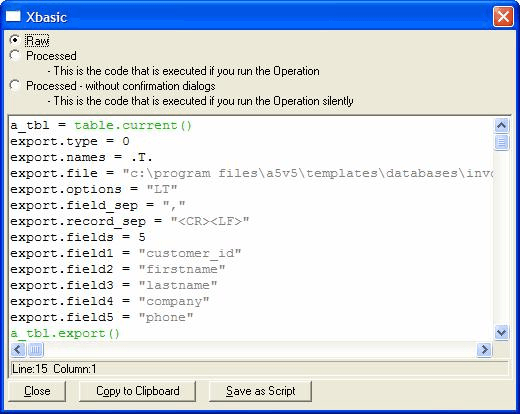

Benefits of Viewing Xbasic
There are many benefits of displaying the Xbasic code for an operation. Inexperienced users who wish to learn about Xbasic can see how their operations are formed, and see the Xbasic syntax in action.
Intermediate and expert users can use the Xbasic generated by the Operation Builder as a starting point for an extended Xbasic script. Used this way, viewing the Xbasic from the Operation Builder can save a lot of time by generating the bare-bones code for you.

Viewing the Xbasic of the Export Operation